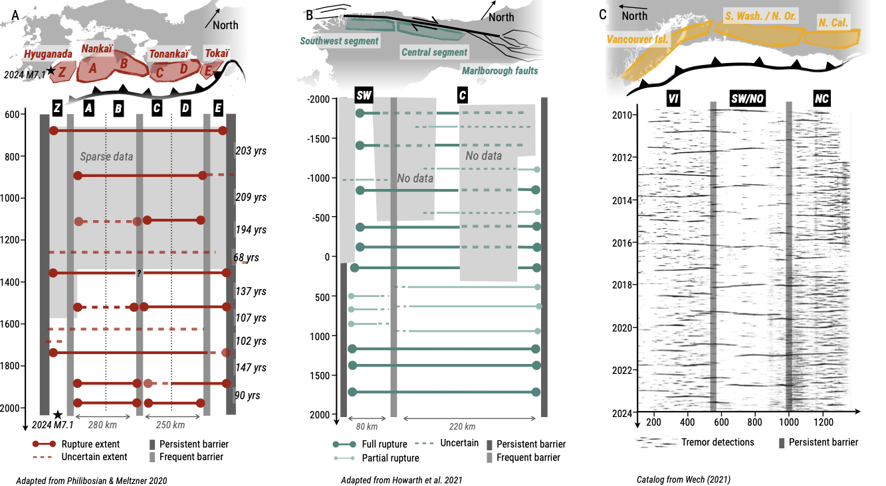

Research projects
You can find a list of my publications on Google Scholar or on the Publications page of this website.Seismic interactions & slip synchronization

Seismicity in stable continental interiors

Source physics of slow earthquakes

Interacting dynamics of fluid flow & seismicity

Exploring seismic processes through sound